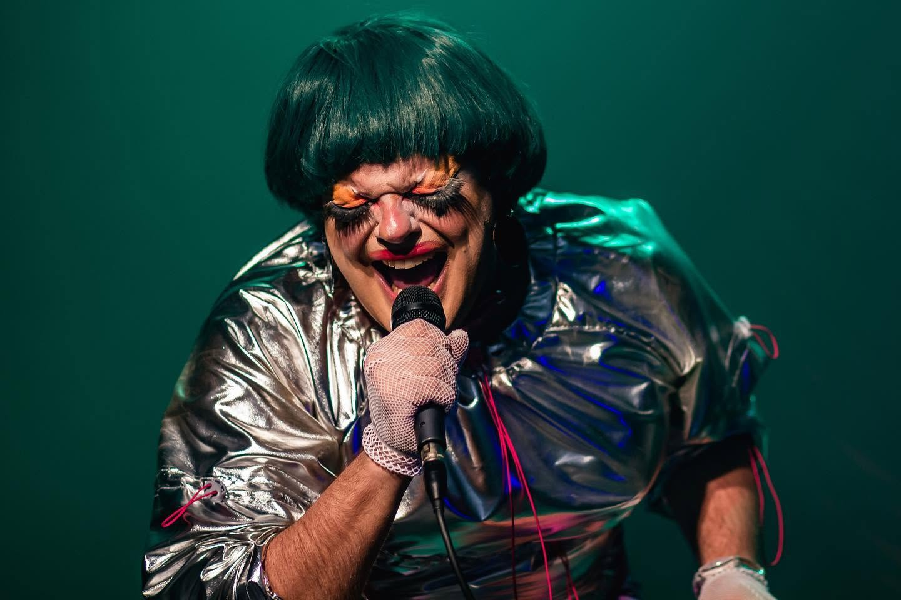

Primeira composição, inspirada na disco music brasileira dos anos 1970 e 80 e nas canções trágicas de Teixeirinha, Diana e Amado Baptista. Videoclipe em 2019, direção de Juliana Sanson, produção de Semy Monastier, produção musical de Jo Mistinguett. Lançamento no 92 Graus The Underground Pub, Curitiba, 17 de outubro de 2019.
Versão de “Keep Me Hangin' On”, das Supremes. Clipe dirigido por Carol Winter.
Oito faixas autorais. Direção musical de Leo Gumiero. Produção de Jo Mistinguett, Amira Massabki, Leo Gumiero e Vini Ruiz. Participações de Vini Sant, Simone Magalhães e Fer Fuchs. Capa ilustrada por André Costa, a partir de foto de Aurelio Dominoni. Pré-lançamento na 1ª MIC — Mostra Internacional de Cabaret, Espaço Fantástico das Artes, Curitiba, 6 de maio de 2022.
O disco passeia pelo pop, punk, post punk e synth pop para construir um imaginário novelesco e tragicômico. Na contramão da tendência pop de autoafirmação e superação, as faixas falam do patético, do fracasso e de histórias de amor que deram errado.
